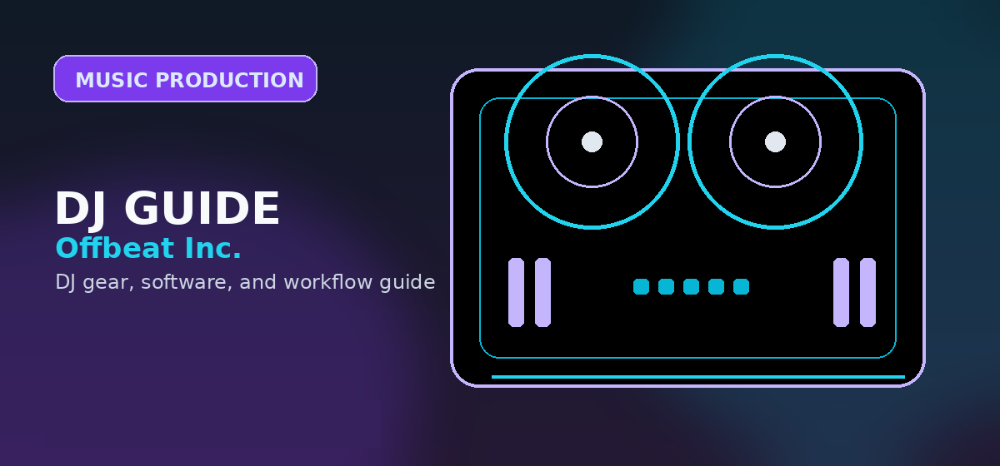

FL Studio
FL Studio is built around fast pattern creation, MIDI programming, and beat sketching.
- Best for beatmaking, EDM, and hip-hop
- Windows and macOS support
- Excellent piano roll
FL Studio vs Logic Pro in 2026: compare workflow, platform support, pricing, stock plugins, beat making speed, recording strengths, and long-term value.

Choosing between FL Studio and Logic Pro in 2026 is less about which DAW is best and more about which one matches how you turn ideas into finished tracks.
FL Studio is the better first pick for Windows beatmakers and loop-first producers. Logic Pro is the better first pick for Mac users who record, arrange, and mix full songs.
FL Studio is built around fast pattern creation, MIDI programming, and beat sketching.
Logic Pro feels more like a full recording studio, with strong arrangement, mixing, vocal, and live-instrument tools built into the Mac ecosystem.
FL Studio is the more obvious choice for MIDI-heavy beat construction. Logic Pro is stronger if you use a Mac and want a complete recording, arranging, editing, and mixing workflow in one place.
| Feature | FL Studio 2026 | Logic Pro 2026 |
|---|---|---|
| Operating System | Windows and macOS | macOS only |
| Primary Workflow | Pattern and loop based | Linear and track based |
| Best For | Beatmaking, EDM, hip-hop, MIDI-heavy | Recording, arranging, mixing, Mac-based |
| Piano Roll | Excellent and fast for detailed MIDI work | Strong, but less central |
| Upgrade Model | Lifetime free updates | Apple-managed updates |
FL Studio moves quickly when the track starts from drums, loops, and MIDI. Logic Pro becomes stronger once the production involves vocals, guitars, live instruments, comping, arrangement, and mix polish.
Choose FL Studio when speed and beat construction matter most. Choose Logic Pro when the production needs a full recording-studio workflow on Mac.
FL Studio is strongest for pattern-based beatmaking, electronic music sketching, and fast loop construction across Windows and macOS. Logic Pro is strongest for Mac users who want a deep recording, songwriting, arrangement, and stock-instrument environment for a one-time purchase.
DJs making edits, bootlegs, loops, and original tracks should choose the DAW that gets them to finished arrangements fastest. The “best” DAW is the one that reduces friction between idea, arrangement, export, and set-ready audio.
Use this page as one part of the decision, not the whole decision. Confirm the current price, software compatibility, operating-system support, and whether the option still fits the way you actually practice or perform.
Before changing gear, software, or workflow, connect the recommendation to an actual use case: home practice, recorded mixes, streaming, mobile events, club preparation, or production crossover. A choice that looks best on paper can still be wrong if it adds setup friction or does not match the way you will play.
The safest workflow is to test the setup exactly as you will use it, then document the cable path, software version, library source, and backup plan. That prevents most of the avoidable failures that happen when DJs buy the right-looking tool but never validate the whole system.
Use these official pages to confirm current specifications, software compatibility, and support details before buying.
FL Studio is usually better for fast beat making, loop building, and MIDI-heavy production because its pattern workflow and piano roll are central to the program.
No. Logic Pro is macOS only.
Logic Pro is generally the better fit for vocal recording, arrangement, editing, and full-song production on Mac.